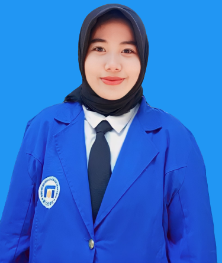

| Batik
Batik adalah hasil karya bangsa Indonesia yang merupakan perpaduan antara seni dan teknologi oleh leluhur bangsa Indonesia. Batik Indonesia dapat berkembang hingga sampai pada suatu tingkatan yang tak ada bandingannya baik dalam desain/motif maupun prosesnya. |

Nama : Fitri Dewi Istiqomah Nim : B12.2023.04773 Jurusan : Akuntansi Kelas : B12.2 |